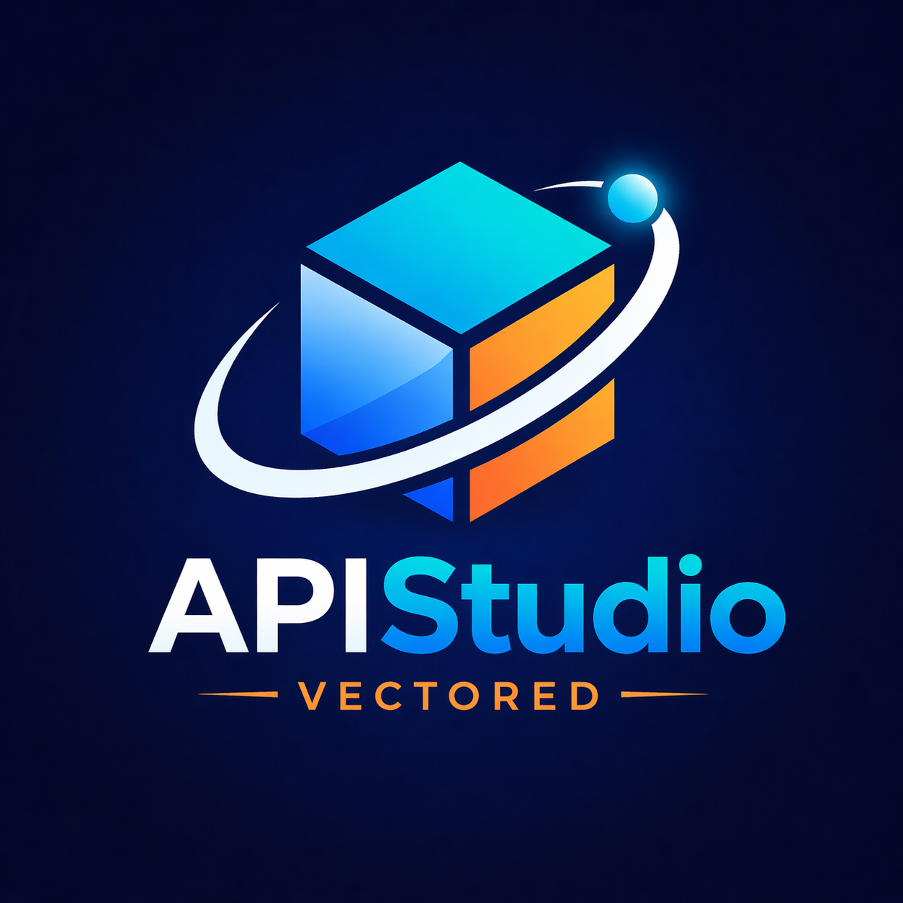

Architecting Enterprise Developer Platforms & Safe, Scalable AI Workflows
Solutions architect with nearly a decade of experience helping global enterprises modernize developer platforms, adopt cloud-native infrastructure, and introduce generative AI safely into mission-critical workflows. Adept at bridging executive technical strategy with hands-on systems engineering.

Production Products & Developer Tools
Outside my corporate architecture role, I build offline-first developer utilities, Atlassian cloud apps, and automation platforms under Vectored.dev with zero data collection and zero subscriptions.

API Studio
VS Code Extension & CLIFully offline, privacy-first API development client for VS Code and CLI. Supports REST, GraphQL, WebSocket, and gRPC with mock servers, Model Context Protocol (MCP), encrypted local secrets vault, and git-native JSON collections.
Forms & Frontdoor
Atlassian Confluence AppVisual form builder with 13 field types, custom theming, and multi-section flows. Features a post-submission automation canvas that creates Confluence pages, opens Jira issues, and posts to Slack or Microsoft Teams.
Macro Toolkit
Atlassian Confluence AppSuite of 15 high-productivity macros for technical documentation: Mermaid, PlantUML, draw.io, and Excalidraw diagrams-as-code, team polls, mood boards, live OpenAPI/Swagger viewers, markdown rendering, and carousels.
Recognition Hub
Confluence & Jira AppPeer recognition mural that embeds directly into Confluence and Jira dashboards. Kudos cards aligned with corporate values, integrated AI assistant to draft praise, GIPHY reactions, SES email alerts, and team leaderboards.
Lens
Chrome & Edge ExtensionOffline screenshot & screen recording tool built for technical writers and developers. Capture region screenshots or record high-FPS GIF/MP4 videos with local redaction/blur, arrows, and auto-organized project folders.
TimeSheets
Atlassian Jira AppEnterprise time tracking inside Jira: log time against hierarchical cost centers and issues, route entries through per-project approvers, handle leave and holidays, lock past accounting periods, and sync with native Jira worklogs.
Enterprise Leadership & Architecture Journey
A track record of designing resilient cloud architectures, leading developer platform engineering, and delivering transformative AI initiatives across Fortune 500 enterprises.
BT Group
Applied AI & Enterprise Enablement- Designed and developed 3 Jira and 4 Confluence plugins, estimated to have saved more than $150,000 USD on plugin cost annually.
- Architected AI-assisted workflows using Atlassian Rovo, Amazon Q, and modern LLM integration patterns (RAG, prompt optimization, context streaming).
- Trained multiple engineering teams to adopt AI safely and effectively for software delivery, platform operations, and knowledge engineering.
- Authored practical enterprise AI guardrails covering data boundaries, human review loops, model safety, and responsible adoption.
- Advised tech leadership on AI business value vs deterministic automation, establishing architectural standards balancing velocity, cost, and security.
BT Group
Consultant / Enterprise Tools Architect- Led platform architecture across three engineering teams delivering core developer services used daily by 10,000+ enterprise developers.
- Partnered with VP and Director stakeholders to convert complex business and security needs into scalable architectures across AWS, Azure, Kubernetes, and Atlassian.
- Designed and built DevOps Hub, an enterprise Microsoft Teams app centralizing access approvals, audits, pull request tracking, and CI/CD operations.
- Engineered a standalone integration middleware connecting Jira, GitLab, GitHub Enterprise, and Jenkins with standard OAuth2 flows.
- Authored Python and PowerShell automated delivery tooling that eliminated over 600,000 hours of manual operational labor.
- Led zero-downtime migrations of mission-critical developer systems from on-premises infrastructure into cloud-native AWS EKS environments.
Tata Consultancy Services
Assistant System Engineer- Designed Microsoft Azure infrastructure and automated multi-environment delivery pipelines using ARM templates, Terraform, and Azure DevOps.
- Migrated high-throughput enterprise workloads from IaaS VM models to cloud-native PaaS architectures, achieving faster release cadences.
- Implemented cross-region and cross-subscription disaster recovery, centralized monitoring (Log Analytics), and cloud governance controls.
Architecture & Engineering Capabilities
A comprehensive matrix of technical domains, toolsets, and architectural patterns refined over a decade of production delivery.
Applied AI & LLM Systems
Cloud & Platform Architecture
Engineering, Languages & APIs
Technical Advisory & Leadership
Industry Certifications & Education
Rigorous cloud architecture, security, and agile scaling certifications accredited by Microsoft and Scaled Agile Inc.

Azure Solutions Architect Expert
Microsoft · AZ-303, AZ-304 Verify on Credly ↗Azure Security Engineer
Microsoft · AZ-500 Verify on Credly ↗Azure Developer Associate
Microsoft · AZ-204 Verify on Credly ↗
Azure Administrator Associate
Microsoft · AZ-104 Verify on Credly ↗
Azure Fundamentals
Microsoft · AZ-900 Verify on Credly ↗SAFe® 6 Agilist
Scaled Agile Inc. Verify on Credly ↗SAFe® Release Train Engineer
Scaled Agile Inc. · RTE Verify on Credly ↗
Cloud Architecture Advisory
Multi-Cloud Enterprise Verify on Credly ↗Bachelor of Engineering (B.E.), Mechanical Engineering
JNN College of Engineering, Shivamogga · Visvesvaraya Technological University (VTU) · Graduated 2016
Let’s Architect Scalable Systems Together
Whether you are looking to modernize your enterprise developer platform, adopt generative AI responsibly, or review your cloud architecture, I would love to connect.